📊 Visualization Tutorial with Matplotlib & Seaborn#
This tutorial is on typography & visualization and introduces two of the most widely used Python libraries for data visualization.
import matplotlib.pyplot as plt
import pandas as pd
import numpy as np
import seaborn as sns
from IPython.display import HTML, display
Introduction#
🎨 What is Matplotlib?#
Matplotlib is the foundational plotting library in Python.
It provides fine-grained control over every aspect of a figure: axes, ticks, labels, colors, line styles, legends, and more.
It is extremely flexible but often requires more code for simple tasks.
Think of it as the “engine” behind most Python plots.
⚡ In energy analytics: use it when you need customized plots for reports or dashboards.
📈 What is Seaborn?#
Seaborn is built on top of Matplotlib, offering a higher-level interface with beautiful defaults.
It is designed for statistical visualization and integrates smoothly with Pandas DataFrames.
With just one line of code, you can create attractive histograms, scatterplots, boxplots, heatmaps, regression plots, etc.
⚡ In energy analytics: great for quick exploration of demand, weather, and correlations without much code.
🔎 Key Difference#
Matplotlib → full control, more detailed coding, suitable for final polished plots.
Seaborn → cleaner, faster, and visually appealing by default, best for exploratory data analysis (EDA).
# Example data
df = pd.DataFrame({
"time": pd.date_range("2022-01-01", periods=24, freq="h"),
"demand": [800,820,850,870,900,950,1000,1200,1400,1600,1700,1750,
1800,1780,1700,1600,1500,1400,1300,1200,1100,1000,900,850]
})
📈 Line Plots#
A line plot connects data points with lines, making it the most common way to visualize time series data.
🔎 Why use line plots?#
Show trends over time (upward, downward, seasonal).
Highlight patterns such as daily cycles, weekly repetition, or long-term growth/decline.
Make it easy to compare multiple series on the same timeline (e.g., Solar vs Wind vs Hydro).
⚡ Energy Example#
Plotting hourly electricity demand across a day shows morning/evening peaks.
Comparing two weeks stacked reveals how weekdays look alike.
Adding forecast vs actual curves helps evaluate model performance.
✅ Key Tips#
Always label axes.
Use legends when comparing multiple lines.
Add gridlines for readability.
Keep line colors and styles distinct if plotting more than one series.
👉 Line plots are the default tool for time-based energy data and should always be part of EDA.
plt.figure(figsize=(10,4))
plt.plot(df["time"], df["demand"], label="Demand (MW)")
plt.title("Hourly Electricity Demand", fontsize=14)
plt.xlabel("Time")
plt.ylabel("Demand [MW]")
plt.legend()
plt.show()
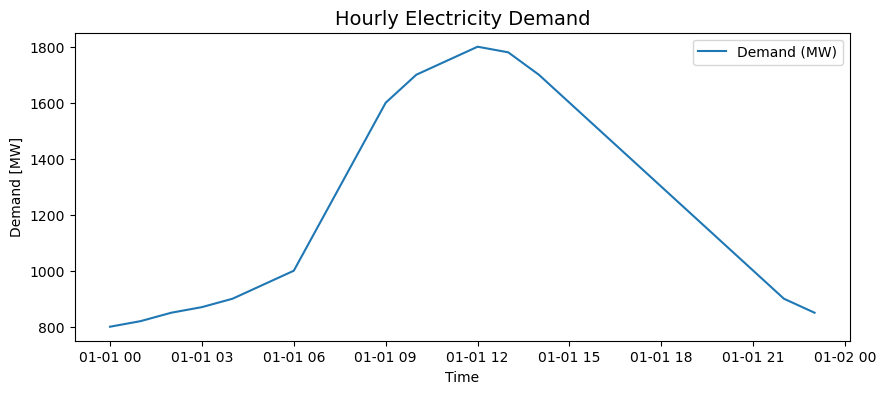
plt.figure(figsize=(12,5))
sns.lineplot(x=df["time"], y=df["demand"], label="Week 1")
sns.lineplot(x=df["time"], y=df["demand"]*1.1, label="Week 2") # mock second week
plt.title("Demand Comparison: Two Weeks")
plt.xlabel("Time")
plt.ylabel("Demand [MW]")
plt.legend()
plt.show()
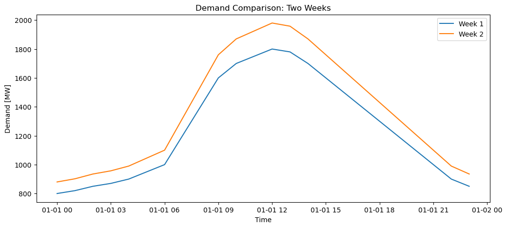
🌈 Area Plots#
Area charts are line charts with the area filled under the curve. They show how a quantity evolves over time while emphasizing magnitude. Stacked area charts add a composition view (parts-of-whole over time).
When to use#
You want a time trend and the total magnitude to stand out.
Stacked: you need composition over time (e.g., end-use contributions each hour).
Cumulative totals (e.g., month-to-date energy).
When to avoid#
Many overlapping series with frequent crossings → consider lines or small multiples.
Precise comparison of sub-series at a time point → consider grouped bars.
Example 1 — Basic area (single series)#
# Example hourly demand (kW)
idx = pd.date_range('2025-01-01', periods=48, freq='h')
demand = pd.Series(np.abs(np.sin(np.linspace(0, 3*np.pi, len(idx))))*4 + 1.5, index=idx)
ax = demand.plot(kind='area', figsize=(10, 4))
ax.set_title('Hourly Demand — Area')
ax.set_xlabel('Time')
ax.set_ylabel('kW')
plt.tight_layout()
plt.show()
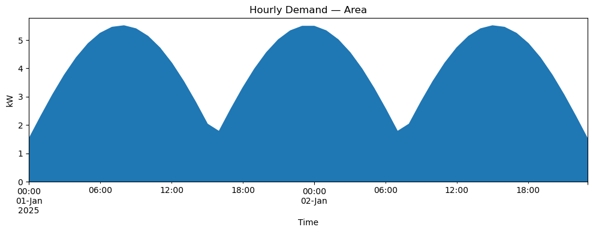
Example 2 — Stacked area (multiple series)#
np.random.seed(0)
end_uses = ['Heating', 'EV', 'Appliances', 'Lighting']
idx = pd.date_range('2025-01-01', periods=48, freq='h')
wide = pd.DataFrame({c: np.abs(np.random.randn(len(idx))) for c in end_uses}, index=idx)
ax = wide.plot(kind='area', stacked=True, figsize=(10, 4))
ax.set_title('Hourly Demand by End-Use — Stacked Area (kW)')
ax.set_xlabel('Time')
ax.set_ylabel('kW')
ax.legend(title='End-use', bbox_to_anchor=(1.02, 1), loc='upper left')
plt.tight_layout()
plt.show()
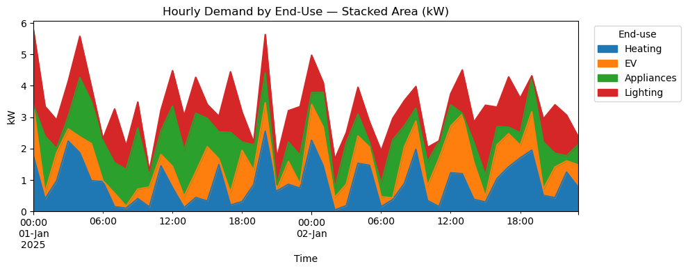
Example 4 — Seaborn styling for area#
Seaborn has no dedicated area primitive, but you can use Pandas/Matplotlib area with seaborn themes/palettes.
sns.set_theme(style='whitegrid')
palette = sns.color_palette('tab10', n_colors=wide.shape[1])
ax = wide.plot(kind='area', stacked=True, figsize=(10, 4), color=palette)
ax.set_title('Hourly Demand by End-Use — Stacked Area (Seaborn palette)')
ax.set_xlabel('Time')
ax.set_ylabel('kW')
ax.legend(title='End-use', bbox_to_anchor=(1.02, 1), loc='upper left')
plt.tight_layout()
plt.show()
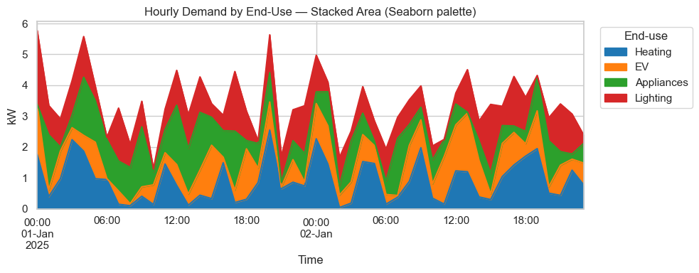
Example 5 — Cumulative area (month-to-date energy)#
energy_kwh = demand.resample('D').sum()
cum = energy_kwh.cumsum()
ax = cum.plot(kind='area', figsize=(10, 4))
ax.set_title('Cumulative Energy (Month-to-Date)')
ax.set_xlabel('Day')
ax.set_ylabel('kWh')
plt.tight_layout()
plt.show()
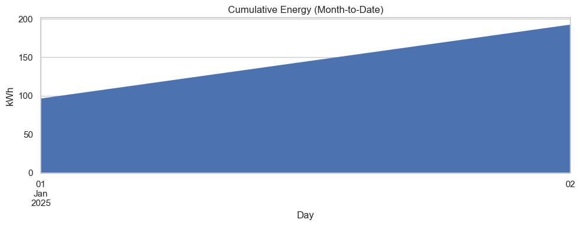
Handling gaps & negatives#
Missing data: interpolate or
fillna(0)so areas don’t drop to zero unexpectedly.Negatives: stacked areas assume non-negative parts. For import/export, consider baseline shift (positive above, negative below 0) or use line + bars.
Readability tips#
Keep series order consistent across figures.
Limit stacked series (~2–6) to avoid visual mud.
Put the legend outside to reduce clutter.
Use small multiples when many series are important.
Save the figure#
plt.savefig('fig_area_stacked.png', dpi=200, bbox_inches='tight')
🥧 Pie Charts#
Pie charts show composition of a single total. They’re best when you have few categories (≤5–6) and the goal is to communicate share at one point in time.
When to use#
You need a quick sense of proportions for a single snapshot (e.g., today’s energy mix).
The audience is non‑technical and prefers a simple breakdown.
When to avoid#
Many categories or small differences → consider bar charts or a 100% stacked bar instead.
Comparing multiple snapshots over time → use 100% stacked bars or a heatmap.
Example 1 — Basic pie (Matplotlib)#
Notes:
startangle=90places the first slice at 12 o’clock.axis('equal')keeps the pie circular.
labels = ['Heating', 'EV', 'Appliances', 'Lighting']
values = [42, 18, 28, 12]
fig, ax = plt.subplots(figsize=(6, 6))
ax.pie(
values,
labels=labels,
autopct='%1.0f%%', # show whole‑percent labels
startangle=90,
counterclock=False
)
ax.set_title('Household Electricity Use — Composition (Today)')
ax.axis('equal') # ensure a circle
plt.tight_layout()
plt.show()
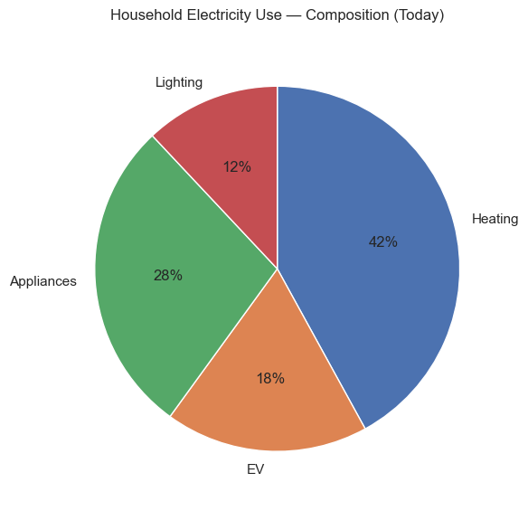
Example 2 — Donut (ring) chart#
A donut chart is a pie chart with a hole in the middle—often easier to read.
labels = ['Heating', 'EV', 'Appliances', 'Lighting']
values = [42, 18, 28, 12]
fig, ax = plt.subplots(figsize=(6, 6))
wedges, texts, autotexts = ax.pie(
values,
labels=labels,
autopct='%1.0f%%',
startangle=90,
counterclock=False,
wedgeprops={'width':0.35, 'edgecolor':'white'} # width < 1.0 creates the hole
)
ax.set_title('Household Electricity Use — Donut Composition')
ax.axis('equal')
plt.tight_layout()
plt.show()
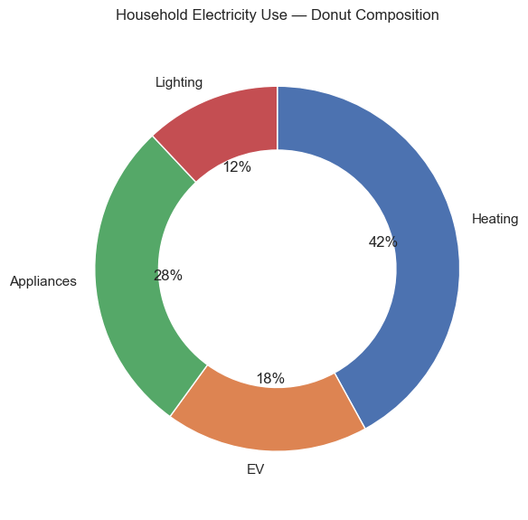
Example 3 — Nested donut (two levels)#
Two rings let you show high‑level vs. detailed composition.
Tip: Keep level‑to‑level colors related (e.g., shades of green for renewables).
# Outer ring: energy source family
outer_labels = ['Renewables', 'Fossils']
outer = [60, 40]
# Inner ring: breakdown of each family (must sum to the family total)
inner_labels = ['Wind', 'Solar', 'Hydro', 'Coal', 'Gas', 'Oil']
inner = [25, 15, 20, 18, 20, 2] # sums to 60 + 40 = 100
fig, ax = plt.subplots(figsize=(7, 7))
# Outer ring
ax.pie(outer, radius=1.0, labels=outer_labels, labeldistance=0.75,
autopct='%1.0f%%', pctdistance=0.9,
startangle=90, counterclock=False,
wedgeprops=dict(width=0.25, edgecolor='white'))
# Inner ring
ax.pie(inner, radius=0.75, labels=inner_labels, labeldistance=0.7,
autopct='%1.0f%%', pctdistance=0.8,
startangle=90, counterclock=False,
wedgeprops=dict(width=0.25, edgecolor='white'))
ax.set_title('Energy Mix — Two Level Composition')
ax.axis('equal')
plt.tight_layout()
plt.show()
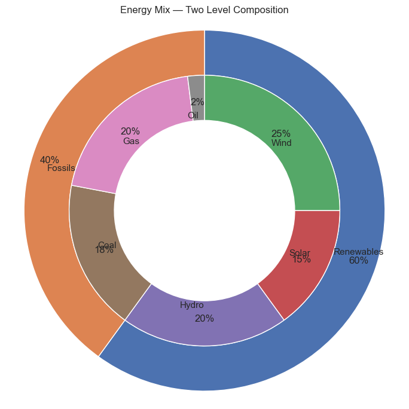
Example 4 — Seaborn styling for pies#
Seaborn doesn’t draw pies directly, but you can apply seaborn theme & palette to Matplotlib pies.
sns.set_theme(style='whitegrid')
palette = sns.color_palette('tab10', n_colors=len(labels))
fig, ax = plt.subplots(figsize=(6, 6))
ax.pie(values, labels=labels, autopct='%1.0f%%', startangle=90,
counterclock=False, colors=palette)
ax.set_title('Household Electricity Use — Seaborn Palette')
ax.axis('equal')
plt.tight_layout()
plt.show()
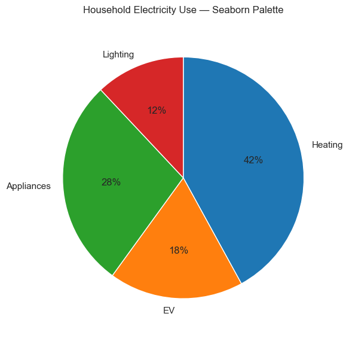
Practical advice#
Limit slices: ≤6 is ideal. Group tiny categories into “Other”.
Order slices by value (descending) and choose a consistent start angle across figures.
Prefer donut for readability; place the total or key number in the center (e.g.,
sum(values)kWh).Put a legend outside if labels are long:
plt.legend(bbox_to_anchor=(1.02, 1), loc='upper left').For time comparisons, use a 100% stacked bar instead of multiple pies.
Save the figure#
plt.savefig('fig_pie_energy_mix.png', dpi=200, bbox_inches='tight')
📊 Bar Plots (Categorical Data)#
A bar plot displays data using rectangular bars, where the length of each bar represents the value of a category. It’s best for comparing discrete groups.
🔎 Why use bar plots?#
Compare categories (e.g., production by energy source).
Show distribution of totals (e.g., demand by region).
Easy to see which category dominates.
⚡ Energy Example#
Compare how much electricity is produced from Solar, Wind, and Hydro.
Show regional demand (North vs South vs East vs West).
Display installed capacity by technology.
✅ Key Tips#
Use vertical bars for simple category names (e.g., Solar, Wind).
Use horizontal bars for long labels (e.g., “North-East Interconnection Zone”).
Sort categories for clarity (e.g., highest to lowest).
Always label axes and use units (
MWh,MW).
👉 Horizontal bar plots are especially useful when category names are long or when you want to emphasize ranking.
sources = ["Solar","Wind","Hydro"]
production = [300, 500, 800]
plt.figure(figsize=(6,4))
plt.bar(sources, production)
plt.title("Energy Production by Source")
plt.ylabel("Production [MWh]")
plt.show()
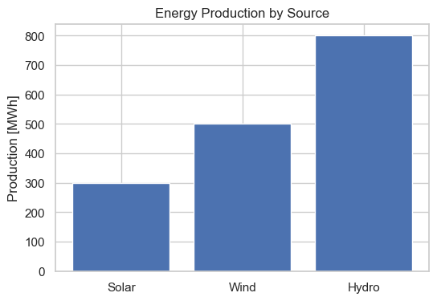
regions = ["North Region", "South Region", "East Region", "West Region"]
demand = [1200, 1500, 1100, 900] # MWh
plt.figure(figsize=(7,4))
plt.barh(regions, demand, color="seagreen")
plt.title("Regional Electricity Demand", fontsize=14)
plt.xlabel("Demand [MWh]")
plt.ylabel("Region")
plt.show()
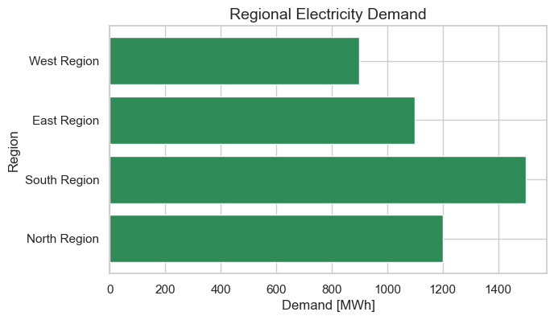
📊 Stacked Bar Plot#
Stacked bar charts are great when you want to compare totals across categories (x‑axis) and show how each total splits into sub‑categories (stack segments). In energy analytics, a classic use case is showing daily electricity consumption split by end‑use (heating, EV charging, appliances, etc.).
When to use#
Compare parts to whole across groups (e.g., days, buildings, customer segments).
The total matters and the composition matters.
Number of stacks is modest (2–6). For more segments, consider small multiples or a heatmap.
Avoid if you need to compare individual sub‑category values across many groups—use grouped bars instead.
Data shape#
Two common shapes:
Wide: one column per sub‑category (easy to stack directly).
Long/tidy: columns like
[group, subcategory, value]→ pivot wider before plotting.
Example 1 — Stacked bars with totals (Matplotlib + Pandas)#
What to look for:
Overall daily totals (bar height) and how they split across end‑uses.
Changes in composition (e.g., Heating decreases while EV increases on weekends).
np.random.seed(0)
days = pd.date_range('2025-01-01', periods=7, freq='D')
end_uses = ['Heating', 'EV', 'Appliances', 'Lighting']
data = pd.DataFrame({
'day': np.repeat(days, len(end_uses)),
'end_use': end_uses * len(days),
'kwh': np.random.uniform(1, 6, size=len(days)*len(end_uses))
})
# Pivot to wide format for stacking
wide = data.pivot(index='day', columns='end_use', values='kwh').round(1)
# --- Plot
ax = wide.plot(kind='bar', stacked=True, figsize=(10, 5))
ax.set_title('Daily Electricity Consumption by End-Use (kWh)')
ax.set_xlabel('Day')
ax.set_ylabel('kWh')
ax.legend(title='End-use', bbox_to_anchor=(1.02, 1), loc='upper left')
plt.tight_layout()
# Optional: annotate bar totals on top
totals = wide.sum(axis=1)
for i, total in enumerate(totals):
ax.text(i, total + 0.2, f"{total:.1f}", ha='center', va='bottom', fontsize=9)
plt.show()
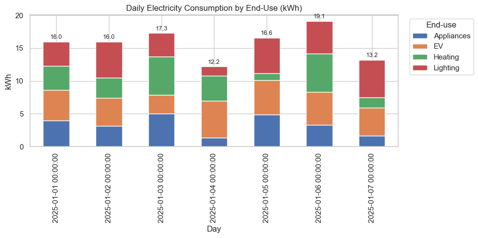
Example 2 — 100% stacked (composition only)#
Use this when you want to compare shares rather than absolute values. Tip: Label the y‑axis as share or % to avoid confusion.
shares = (wide.T / wide.sum(axis=1)).T # row-normalize to 1.0
ax = shares.plot(kind='bar', stacked=True, figsize=(10, 5))
ax.set_title('Daily Electricity Consumption — Share by End-Use (100%)')
ax.set_xlabel('Day')
ax.set_ylabel('Share')
ax.legend(title='End-use', bbox_to_anchor=(1.02, 1), loc='upper left')
plt.tight_layout()
plt.show()
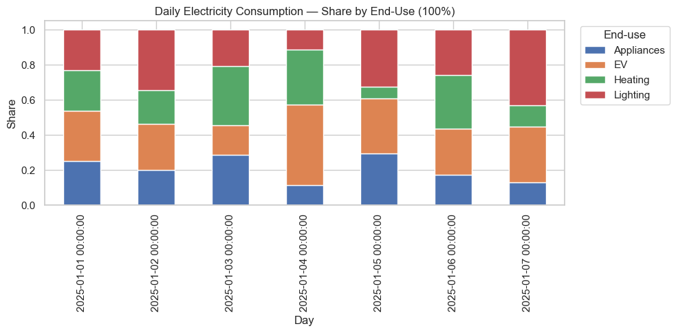
Example 3 — Horizontal stacked bars#
Horizontal layout improves legibility when you have long category labels or many groups.
ax = wide.plot(kind='barh', stacked=True, figsize=(10, 5))
ax.set_title('Daily Electricity Consumption by End-Use (kWh) — Horizontal')
ax.set_xlabel('kWh')
ax.set_ylabel('Day')
ax.legend(title='End-use', bbox_to_anchor=(1.02, 1), loc='lower left')
plt.tight_layout()
plt.show()
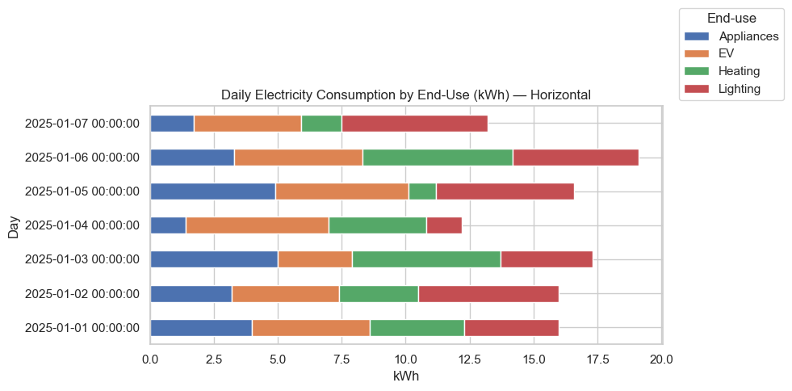
Styling & readability#
Order stacks consistently (e.g., Heating at bottom, Lighting at top) to help pattern recognition.
Keep legend outside the plot area to reduce clutter.
Use number formatting (e.g.,
f"{total:.1f}") for clean annotations.For many groups, rotate x‑tick labels or switch to horizontal bars.
Prefer colorblind‑friendly palettes if you manually set colors.
Handling negatives (surplus/deficits)#
Stacked bars assume non‑negative parts. If you have negative values (e.g., export vs import), consider:
Diverging bars (positive above, negative below zero).
A waterfall chart for cumulative effects.
Common pitfalls#
Too many segments: hard to compare; consider grouped bars or small multiples.
Hiding scale in 100% stacked bars: great for composition but loses magnitude.
Inconsistent ordering/colors across plots: harms comparability.
Save the figure#
plt.savefig('fig_stacked_bar_daily_kwh.png', dpi=200, bbox_inches='tight')
Summary: Use stacked bars when both the total and its composition matter. For share‑only insights, use 100% stacked. Keep stacks ordered and labels readable.
Seaborn variants#
Although seaborn doesn’t provide a native stacked bar for categorical data, you have two solid options:
A) Quick win — seaborn styling + pandas stacking#
Use seaborn for theme/colors and keep Pandas’ stacked=True under the hood.
sns.set_theme(style="whitegrid")
# Reuse `wide` and `end_uses` from above
palette = sns.color_palette("tab10", n_colors=len(wide.columns))
ax = wide.plot(kind='bar', stacked=True, figsize=(10, 5), color=palette)
ax.set_title('Daily Electricity Consumption by End-Use (kWh) — Seaborn styled')
ax.set_xlabel('Day')
ax.set_ylabel('kWh')
ax.legend(title='End-use', bbox_to_anchor=(1.02, 1), loc='upper left')
plt.tight_layout()
plt.show()
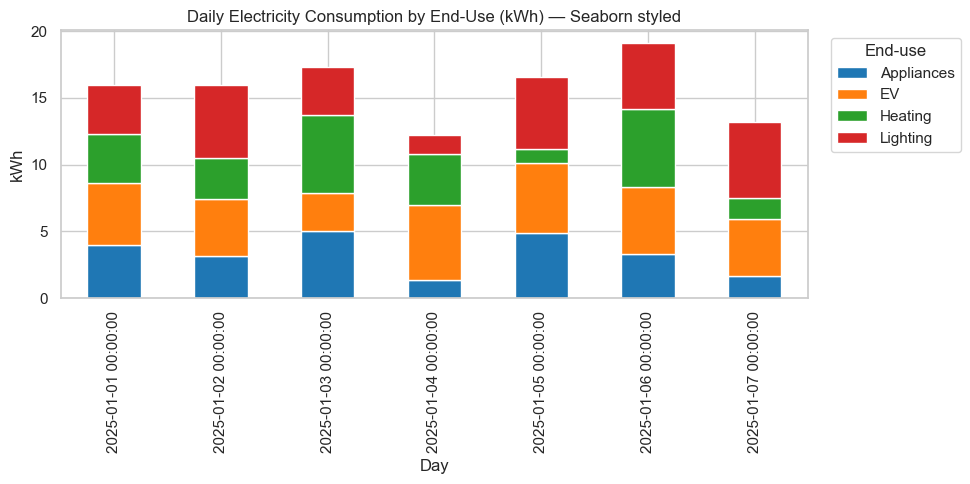
Why this works: seaborn themes/palettes affect Matplotlib globally, so you get seaborn aesthetics while keeping a stacked bar.
B) Full control — manual stacking with seaborn palette#
Build stacks explicitly with plt.bar, using seaborn’s palette for consistent styling.
sns.set_theme(style="whitegrid")
palette = sns.color_palette("tab10", n_colors=len(wide.columns))
fig, ax = plt.subplots(figsize=(10, 5))
x = np.arange(len(wide.index))
labels = wide.index.strftime('%Y-%m-%d')
bottom = np.zeros(len(wide))
for i, col in enumerate(wide.columns):
ax.bar(x, wide[col].values, bottom=bottom, label=col, color=palette[i])
bottom += wide[col].values
ax.set_xticks(x)
ax.set_xticklabels(labels, rotation=0)
ax.set_title('Daily Electricity Consumption by End-Use (kWh) — Manual stack (Seaborn colors)')
ax.set_xlabel('Day')
ax.set_ylabel('kWh')
ax.legend(title='End-use', bbox_to_anchor=(1.02, 1), loc='upper left')
plt.tight_layout()
plt.show()
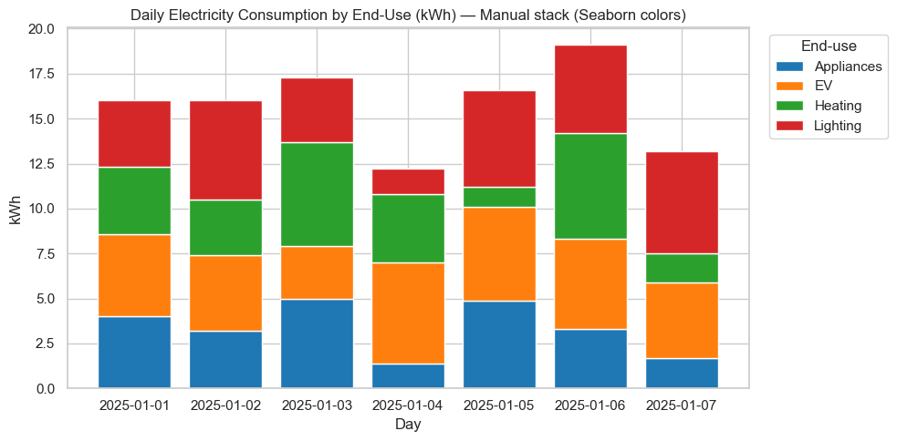
C) 100% stacked (composition only) with seaborn palette#
from matplotlib import ticker as mtick
sns.set_theme(style="whitegrid")
shares = (wide.T / wide.sum(axis=1)).T.fillna(0.0)
palette = sns.color_palette("tab10", n_colors=len(shares.columns))
fig, ax = plt.subplots(figsize=(10, 5))
x = np.arange(len(shares.index))
labels = shares.index.strftime('%Y-%m-%d')
bottom = np.zeros(len(shares))
for i, col in enumerate(shares.columns):
ax.bar(x, shares[col].values, bottom=bottom, label=col, color=palette[i])
bottom += shares[col].values
ax.set_xticks(x)
ax.set_xticklabels(labels)
ax.set_ylim(0, 1)
ax.yaxis.set_major_formatter(mtick.PercentFormatter(1.0))
ax.set_title('Daily Electricity Consumption — Share by End-Use (100%) — Seaborn palette')
ax.set_xlabel('Day')
ax.set_ylabel('Share')
ax.legend(title='End-use', bbox_to_anchor=(1.02, 1), loc='upper left')
plt.tight_layout()
plt.show()
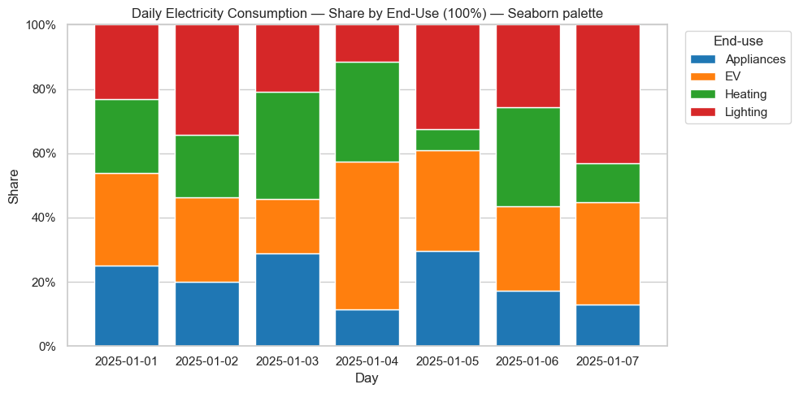
Notes
Seaborn’s
barplot/catplot(kind='bar')does grouped bars withhue, not stacked. That’s why we either (A) rely on Pandas stacking with seaborn theming, or (B) build stacks manually withplt.barand a seaborn palette.Keep the palette order consistent across figures for comparability.
For many dates/categories, consider rotating tick labels or switching to horizontal bars using
barhin the manual approach.
📊 Histogram & KDE (Kernel Density Estimate)#
A histogram shows the distribution of data by splitting values into bins (intervals) and counting how many observations fall into each bin. A KDE (Kernel Density Estimate) is a smoothed curve that approximates the distribution.
🔎 Why use them?#
Understand the shape of the data (normal, skewed, multimodal).
Spot common ranges and rare values.
Compare distributions between groups (e.g., demand in winter vs summer).
⚡ Energy Example#
Histogram of hourly demand shows which demand levels are most frequent.
Adding KDE gives a smooth curve, making it easier to see peaks and spread.
✅ How to Read a Histogram + KDE#
X-axis → the values (e.g., demand in MW).
Y-axis → how often those values occur (frequency or density).
Histogram bars → show counts in each bin.
KDE curve → smoothed shape of the distribution.
Interpretation:
Tall bars / peaks → demand levels that occur often.
Wide spread → high variability.
Multiple peaks → different operating regimes (e.g., weekdays vs weekends).
👉 Together, histograms + KDEs help you quickly see whether demand is stable, variable, or follows multiple patterns.
plt.figure(figsize=(6,4))
sns.histplot(df["demand"], kde=True, bins=10)
plt.title("Distribution of Hourly Demand")
plt.xlabel("Demand [MW]")
plt.show()
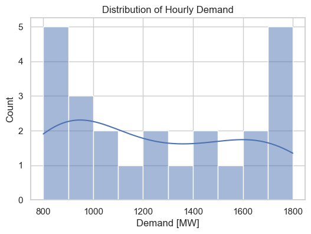
🌞❄️ Comparing Distributions: Summer vs Winter Demand#
Sometimes we want to compare how distributions differ between groups.
With Seaborn, we can add a hue argument to separate categories (e.g., summer vs winter).
# Example dataset: hourly demand with season labels
winter = [900,950,1000,1050,1100,1200,1250,1300,1400,1500,1600,1700]
summer = [700,750,800,820,850,900,950,1000,1050,1100,1150,1200]
df = pd.DataFrame({
"demand": winter + summer,
"season": ["Winter"]*len(winter) + ["Summer"]*len(summer)
})
plt.figure(figsize=(8,5))
sns.histplot(data=df, x="demand", hue="season", kde=True, bins=8, palette={"Winter":"blue", "Summer":"orange"}, alpha=0.6)
plt.title("Demand Distribution: Winter vs Summer", fontsize=14)
plt.xlabel("Demand [MW]")
plt.ylabel("Frequency")
plt.show()
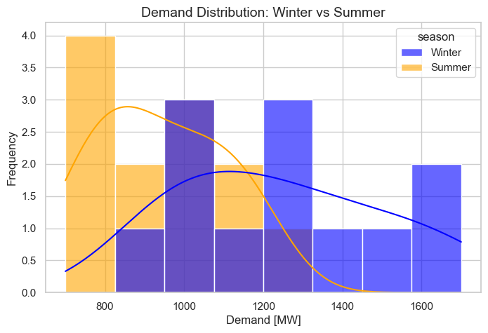
✅ How to Read This Plot#
Two distributions → Winter (blue) vs Summer (orange).
Histogram bars → show frequency of demand ranges for each season.
KDE curves → smooth comparison of overall shape.
Interpretation:
Winter demand is shifted higher (more heating).
Summer demand is lower and flatter (less heating, sometimes cooling).
👉 Using hue makes comparisons very intuitive — you can clearly see seasonal shifts in demand patterns.
🔵 Scatter Plots#
A scatter plot shows the relationship between two variables by plotting individual data points. By adding color (hue), size, or style, we can visualize more dimensions of the data.
🔎 Why use scatter plots?#
Explore relationships between demand and external factors (temperature, wind, solar radiation).
Detect non-linear effects (e.g., U-shape demand vs temperature).
Spot outliers and special cases (holidays, anomalies).
Add a third variable via color or size to see interactions.
✅ Key Tips for Scatter Plots#
Use alpha < 1 to reduce overplotting when you have thousands of points.
Use hue for categorical separation (weekday, season, holiday).
Use size or style for additional dimensions (e.g., wind speed, holiday flag).
Always check if the relationship looks linear or non-linear before choosing a model.
👉 Scatter plots are the workhorse of EDA in energy demand analysis: they reveal hidden drivers and guide feature engineering.
Examples#
Demand vs Temperature (U-shape: heating & cooling)#
Idea: Demand rises when it’s very cold (heating) and again when it’s very hot (cooling).
import numpy as np
import pandas as pd
import seaborn as sns
import matplotlib.pyplot as plt
rng = np.random.default_rng(42)
n = 800
temp = rng.uniform(-15, 32, size=n) # °C
# U-shape: quadratic around ~15°C comfort zone
demand = 1200 + 6*(temp-15)**2 + rng.normal(0, 60, size=n)
# Add weekday/weekend label for hue
weekday = rng.choice(["Weekday","Weekend"], size=n, p=[0.7, 0.3])
df1 = pd.DataFrame({"temp": temp, "demand": demand, "daytype": weekday})
plt.figure(figsize=(10,6))
sns.scatterplot(data=df1, x="temp", y="demand", hue="daytype", alpha=0.6)
plt.title("Demand vs Temperature (synthetic)")
plt.xlabel("Temperature (°C)")
plt.ylabel("Demand [MW]")
plt.show()
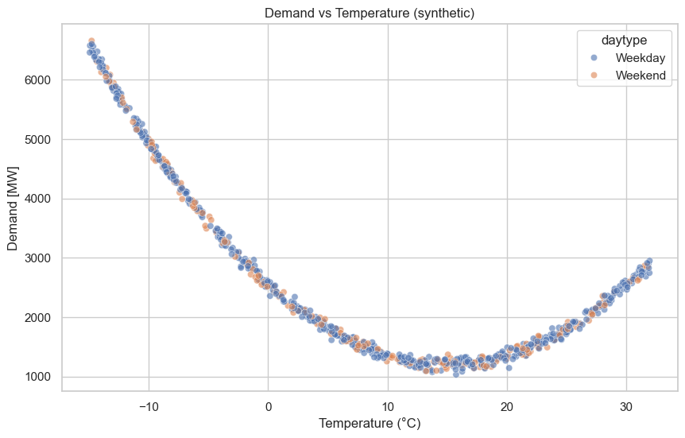
Wind Speed vs Wind Generation (saturation curve)#
Idea: Power grows ~cubic at low speeds and saturates near rated output.
rng = np.random.default_rng(7)
n = 600
wind = rng.uniform(0, 25, size=n) # m/s
# Logistic-like saturation
rated = 2000 # MW
gen = rated / (1 + np.exp(-(wind-10)/2)) + rng.normal(0, 60, size=n)
gen = np.clip(gen, 0, rated)
df2 = pd.DataFrame({"wind_speed": wind, "wind_gen": gen})
plt.figure(figsize=(10,6))
sns.scatterplot(data=df2, x="wind_speed", y="wind_gen", alpha=0.6)
plt.title("Wind Generation vs Wind Speed (synthetic)")
plt.xlabel("Wind Speed (m/s)")
plt.ylabel("Wind Generation [MW]")
plt.show()
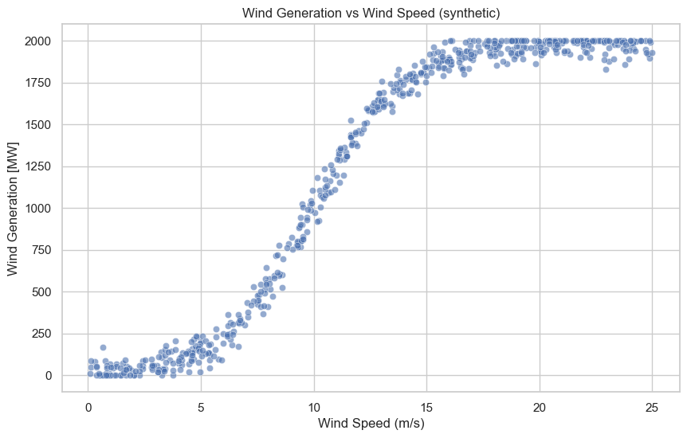
Hourly Load Profile by Day Type (color by weekday/weekend)#
Idea: Morning/evening peaks on weekdays; flatter/lower on weekends.
rng = np.random.default_rng(11)
hours = np.arange(24)
# Weekday pattern: morning/evening peaks
wk = 900 + 200*np.exp(-0.5*((hours-8)/2.2)**2) + 250*np.exp(-0.5*((hours-18)/2.5)**2)
wk += rng.normal(0, 20, size=24)
# Weekend pattern: lower & flatter
we = 800 + 120*np.exp(-0.5*((hours-11)/3.0)**2) + 100*np.exp(-0.5*((hours-19)/3.5)**2)
we += rng.normal(0, 20, size=24)
df4 = pd.DataFrame({
"hour": np.tile(hours, 2),
"demand": np.r_[wk, we],
"daytype": np.repeat(["Weekday","Weekend"], 24)
})
plt.figure(figsize=(10,6))
sns.scatterplot(data=df4, x="hour", y="demand", hue="daytype", s=80)
sns.lineplot(data=df4, x="hour", y="demand", hue="daytype", legend=False)
plt.title("Hourly Load Profile: Weekday vs Weekend (synthetic)")
plt.xlabel("Hour of Day")
plt.ylabel("Demand [MW]")
plt.show()
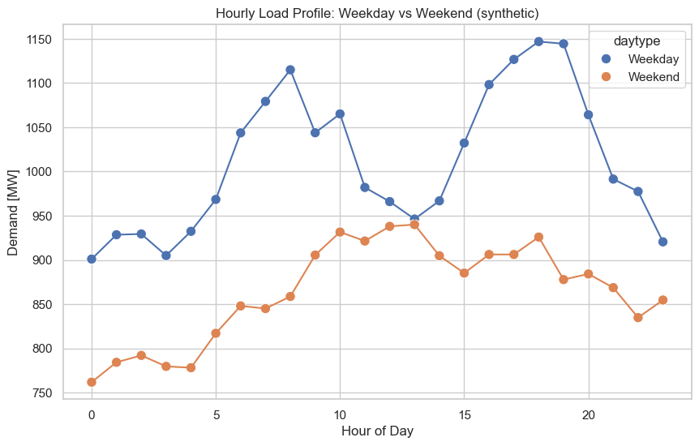
Price vs Demand (with heteroskedastic noise)#
Idea: Higher demand often correlates with higher prices, with variance increasing at peaks.
rng = np.random.default_rng(5)
n = 900
demand = rng.uniform(800, 2400, size=n)
# Price increases with demand; volatility grows at higher demand
price = 20 + 0.06*demand + rng.normal(0, 0.015*demand, size=n)
season = rng.choice(["Winter","Shoulder","Summer"], size=n, p=[0.4, 0.3, 0.3])
df5 = pd.DataFrame({"demand": demand, "price": price, "season": season})
plt.figure(figsize=(10,6))
sns.scatterplot(data=df5, x="demand", y="price", hue="season", alpha=0.6)
plt.title("Price vs Demand with Heteroskedasticity (synthetic)")
plt.xlabel("Demand [MW]")
plt.ylabel("Price [€/MWh]")
plt.show()
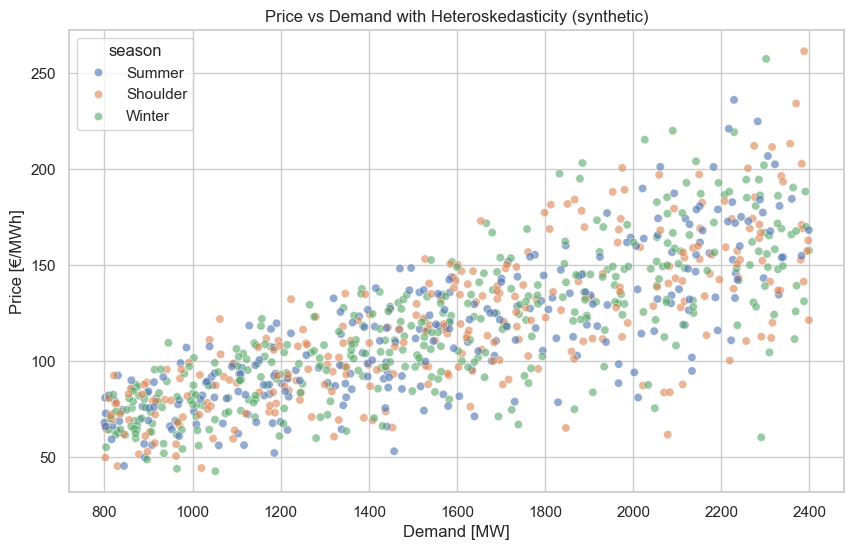
Demand vs Temperature by Season (facets)#
Idea: Same demand–temperature relationship, but visualized per season.
rng = np.random.default_rng(17)
n = 1200
temp = rng.uniform(-15, 32, size=n)
season = pd.cut(temp, bins=[-50,0,15,50], labels=["Winter","Spring/Autumn","Summer"])
demand = 1250 + 5*(temp-15)**2 + rng.normal(0, 55, size=n)
df6 = pd.DataFrame({"temp": temp, "demand": demand, "season": season})
g = sns.FacetGrid(df6, col="season", col_wrap=3, height=3.8, sharex=True, sharey=True)
g.map_dataframe(sns.scatterplot, x="temp", y="demand", alpha=0.6, s=30)
g.set_axis_labels("Temperature (°C)", "Demand [MW]")
g.fig.suptitle("Demand vs Temperature by Season (synthetic)", y=1.04)
plt.show()
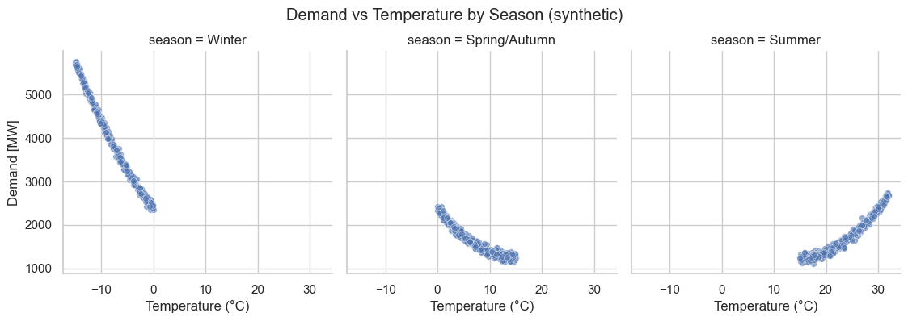
🔴 Scatterplot with Regression Line#
A scatterplot shows the relationship between two variables. Adding a regression line helps visualize the underlying trend.
🔎 Why use scatterplots with regression?#
Identify linear or non-linear relationships.
Spot clusters or outliers.
Check if one variable can help predict another.
⚡ Energy Example#
Demand vs Temperature: colder or hotter days often increase demand (heating/cooling).
Wind speed vs Wind generation: higher wind speeds usually increase output, up to turbine limits.
Solar radiation vs PV production: positive correlation until saturation.
weather = pd.DataFrame({
"temp": [-10,-5,0,5,10,15,20,25],
"demand": [2200,2100,2000,1900,1800,1750,1700,1800]
})
plt.figure(figsize=(6,4))
sns.scatterplot(x="temp", y="demand", data=weather)
sns.regplot(x="temp", y="demand", data=weather, ci=None, scatter=False, color="red")
plt.title("Demand vs Temperature with Regression Line")
plt.xlabel("Temperature (°C)")
plt.ylabel("Demand [MW]")
plt.show()
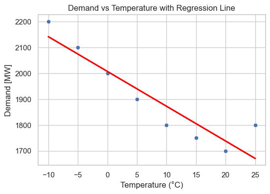
✅ How to Read It#
Dots = actual observations.
Red line = best-fit linear regression line.
If the dots closely follow the line → strong linear correlation.
If the dots curve away → relationship may be non-linear (e.g., U-shape for temperature vs demand).
👉 Scatterplots with regression are essential for feature selection in modeling: they help you see which variables have predictive power.
📦 Boxplots#
A boxplot (also called a whisker plot) summarizes the distribution of a dataset. It highlights the median, spread, and potential outliers.
🔎 Why use boxplots?#
Compare distributions across categories (e.g., Solar vs Wind vs Hydro).
Show central tendency (median).
Reveal spread (interquartile range).
Detect outliers (points far from the rest).
sources = ["Solar"]*10 + ["Wind"]*10 + ["Hydro"]*10
production = [
# Solar: centered ~300, but variable with a couple of high/low outliers
250, 270, 280, 290, 310, 330, 340, 360, 400, 450,
# Wind: centered ~500, wider variability
420, 450, 470, 490, 520, 550, 600, 650, 700, 750,
# Hydro: centered ~800, relatively stable but with spread
720, 740, 760, 780, 800, 820, 850, 880, 920, 950
]
df_prod = pd.DataFrame({"Source": sources, "Production": production})
plt.figure(figsize=(8,5))
sns.boxplot(x="Source", y="Production", data=df_prod, hue="Source", palette="Set2", legend=False)
plt.title("Energy Production by Source")
plt.xlabel("Energy Source")
plt.ylabel("Production [MWh]")
plt.show()
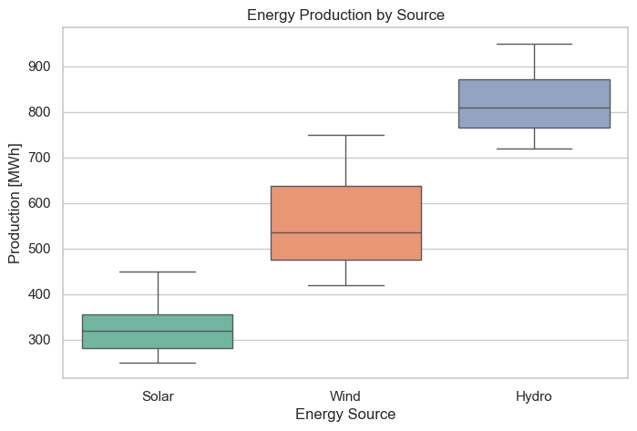
✅ How to Read a Boxplot#
Each box shows the distribution for one energy source:
Center line → the median (50th percentile).
Box edges → 25th and 75th percentiles (interquartile range, IQR).
Whiskers → extend to the smallest/largest values within 1.5 × IQR.
Dots (if any) → outliers, unusually high or low values.
📊 Interpretation (with spread & variability)#
Solar → centered around ~300 MWh but with large spread; some days drop as low as 250, others spike above 400–450 → shows intermittent, weather-dependent output.
Wind → centered ~500 MWh but with very wide variability (420–750). This reflects how wind conditions can swing output significantly.
Hydro → centered around ~800 MWh, generally more stable, but still shows a noticeable range (720–950), with a few high production days.
👉 Boxplots are great when you want to compare multiple categories side by side — they compress a lot of distribution information into a simple graphic.
🎻 Violin Plots#
A violin plot combines the ideas of a boxplot and a density plot. It shows the distribution shape of the data, not just summary statistics.
🔎 Why use violin plots?#
Visualize the full distribution (not just median & quartiles).
See whether data is symmetric, skewed, or multimodal (multiple peaks).
Compare the spread and shape of categories side by side.
plt.figure(figsize=(8,5))
sns.violinplot(
x="Source", y="Production", data=df_prod,
hue="Source", palette="muted", legend=False
)
plt.title("Production Distributions by Source", fontsize=14)
plt.xlabel("Energy Source")
plt.ylabel("Production [MWh]")
plt.show()
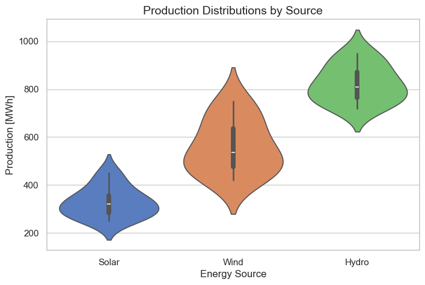
✅ How to Read a Violin Plot#
Width of the violin → how frequent values are at that level.
Thin sections → rare values.
Thick sections → common values.
Center line → median (like in boxplot).
White box inside → interquartile range (25–75%).
📊 Interpretation (with more spread & variability)#
Solar → violin is wide at multiple levels, showing many operating ranges (from ~250 up to ~400+). This reflects strong day-to-day fluctuations in solar production.
Wind → violin is very tall and variable, stretching from ~420 to ~750. The wide belly around ~500–600 shows the most common operating range, but long tails indicate occasional extreme highs/lows.
Hydro → violin is narrower, concentrated around ~800 MWh, but still spreads up to ~950. This suggests relative stability compared to solar and wind.
👉 Violin plots are useful when you want to see the full shape of the distribution, not just averages — they tell the story of variability and consistency in energy sources.
🌡️💨 Heatmap (Correlations)#
A heatmap is a visual way to represent the correlation matrix between variables. Correlation values range from -1 to +1:
+1 → perfect positive correlation (as one increases, the other increases).
-1 → perfect negative correlation (as one increases, the other decreases).
0 → no linear relationship.
weather = pd.DataFrame({
"demand": [2000, 2100, 2200, 1900, 1800, 1700, 1600],
"temp": [-5, 0, 5, 10, 15, 20, 25],
"wind": [2, 3, 4, 5, 6, 4, 3],
"humidity":[85, 80, 75, 70, 65, 60, 55], # % (falls as temp rises)
"solar": [50, 100, 200, 400, 600, 750, 850], # W/m² (rises with temp)
"pressure":[1025, 1022, 1018, 1015, 1010, 1008, 1005] # hPa (slight decline)
})
weather.corr()
| demand | temp | wind | humidity | solar | pressure | |
|---|---|---|---|---|---|---|
| demand | 1.000000 | -0.857143 | -0.172062 | 0.857143 | -0.916261 | 0.851216 |
| temp | -0.857143 | 1.000000 | 0.401478 | -1.000000 | 0.988598 | -0.996546 |
| wind | -0.172062 | 0.401478 | 1.000000 | -0.401478 | 0.376156 | -0.454865 |
| humidity | 0.857143 | -1.000000 | -0.401478 | 1.000000 | -0.988598 | 0.996546 |
| solar | -0.916261 | 0.988598 | 0.376156 | -0.988598 | 1.000000 | -0.988687 |
| pressure | 0.851216 | -0.996546 | -0.454865 | 0.996546 | -0.988687 | 1.000000 |
plt.figure(figsize=(7,5))
sns.heatmap(weather.corr(), annot=True, cmap="coolwarm", fmt=".2f")
plt.title("Correlation Heatmap (Demand & Weather Features)")
plt.show()
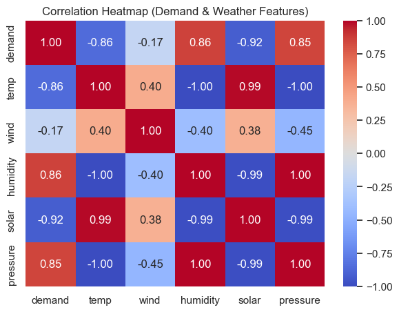
✅ How to Read This Heatmap#
Demand vs Temp = strong negative → colder temps = higher demand (heating).
Demand vs Humidity = positive → cold days (high humidity in winter) align with higher demand.
Demand vs Solar = negative → more sunlight (often warmer days) = lower demand.
Temp vs Solar = positive → sunny days tend to be warmer.
Temp vs Pressure = negative → as temps rise, pressure tends to drop slightly.
🔗 Correlation Clustermap#
A clustermap is like a heatmap, but it also performs hierarchical clustering of rows and columns. This groups together variables that have similar correlation patterns, making it easier to spot clusters of related features.
sns.clustermap(
weather.corr(),
cmap="rocket_r", # reversed "rocket" color palette
annot=True,
figsize=(7,7)
);
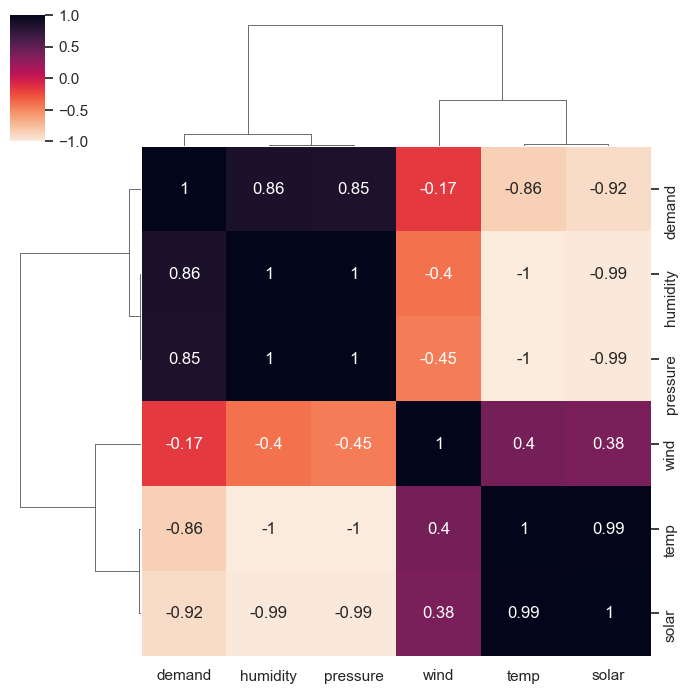
✅ How to Read a Clustermap#
Color scale works just like a heatmap → red/orange = high correlation, dark = low/negative.
Dendrograms (the tree-like structures) show how features group together:
Variables in the same branch are more correlated with each other.
In our example:
Temp, Solar, and Pressure might cluster together (all related to seasonal/weather cycles).
Demand and Humidity might cluster, since both peak on colder days.
Wind may form its own branch if it behaves differently.
👉 Compared to a plain heatmap, a clustermap automatically organizes features, which is especially useful when you have many variables (e.g., dozens of weather and demand drivers).
🔄 Pairplot (Scatter Matrix)#
A pairplot (also called a scatter matrix) shows the relationships between all pairs of variables in a dataset. It combines multiple scatterplots into a grid, with histograms or KDE plots on the diagonal.
🔎 Why use pairplots?#
Explore all variable relationships at once.
Spot strong correlations and non-linear patterns.
Detect clusters or groups (e.g., weekdays vs weekends, seasons).
Quick overview before running models or feature selection.
sns.pairplot(weather, diag_kind="kde", corner=True)
plt.suptitle("Pairwise Relationships in Energy Data", y=1.02, fontsize=14)
plt.show()
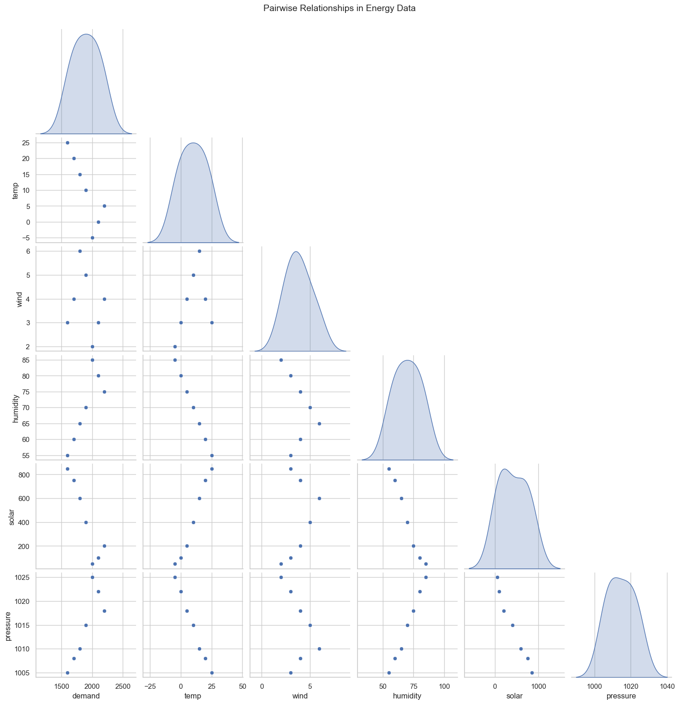
✅ How to Read a Pairplot#
Each scatterplot = relationship between two variables.
Example: Demand vs Temp → negative trend (colder → higher demand).
Example: Solar vs Temp → positive trend (warmer → sunnier).
Diagonal plots = distribution of each variable (histogram or KDE).
Clusters/outliers show up as groups or isolated points.
👉 Pairplots are especially useful at the start of EDA to see how demand relates to multiple weather features before building models.
Customizing Colors, Sizes, and Titles#
Matplotlib: Line styles, markers, title, grid#
# Example data
df = pd.DataFrame({
"time": pd.date_range("2022-01-01", periods=24, freq="h"),
"demand": [800,820,850,870,900,950,1000,1200,1400,1600,1700,1750,
1800,1780,1700,1600,1500,1400,1300,1200,1100,1000,900,850]
})
plt.figure(figsize=(12,5))
plt.plot(df["time"], df["demand"], color="navy", linewidth=2, linestyle="--", marker="o", label="Demand (MW)")
plt.title("Hourly Electricity Demand", fontsize=16, fontweight="bold", color="darkred")
plt.xlabel("Time", fontsize=12)
plt.ylabel("Demand [MW]", fontsize=12)
plt.legend()
plt.grid(True, linestyle=":")
plt.show()
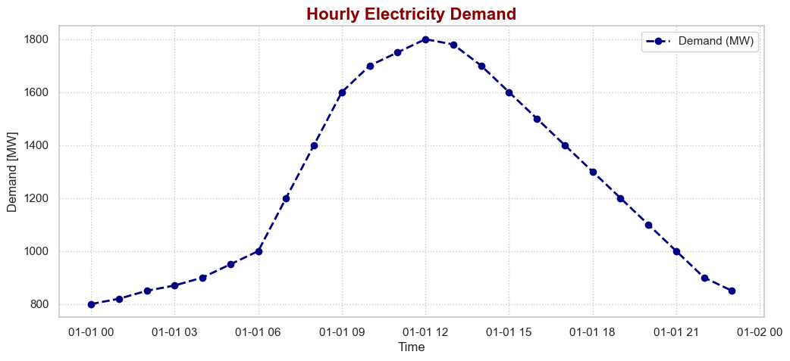
Seaborn: Palettes and context#
# Global style and context
sns.set_style("whitegrid") # options: darkgrid, whitegrid, dark, white, ticks
sns.set_context("talk") # options: paper, notebook, talk, poster
plt.figure(figsize=(8,5))
sns.histplot(df["demand"], bins=12, color="steelblue")
plt.title("Distribution of Hourly Demand")
plt.xlabel("Demand [MW]")
plt.show()
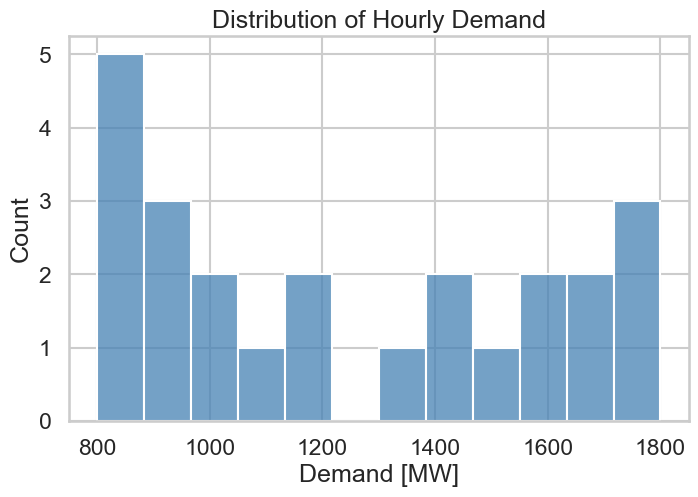
1) Categorical palette (for hue with discrete labels)#
rng = np.random.default_rng(7)
# --- time axis: 7 days hourly ---
idx = pd.date_range("2025-01-01", periods=7*24, freq="h")
n = len(idx)
hour = idx.hour.values
day = idx.floor("D")
# --- total demand (MW): diurnal + weekend dip + noise ---
is_weekend = (idx.weekday >= 5)
cycle = 1.0 + 0.8 * np.sin(2*np.pi*(hour - 7)/24.0)
weekend = np.where(is_weekend, -0.12, 0.0)
demand = np.clip(2.5 + cycle + weekend + rng.normal(0, 0.1, n), 0.5, None)
df = pd.DataFrame({"time": idx, "day": day, "hour": hour, "demand": demand}).set_index("time")
# --- end-use composition (for categorical hue & daily bars) ---
cats = ["Heating","EV","Lighting","Appliances"]
heating = 0.32 + 0.12 * np.cos(2*np.pi*(hour - 6)/24.0)
ev = 0.08 + 0.12 * np.exp(-((hour - 20)/3.5)**2)
lighting = 0.07 + 0.06 * np.exp(-((hour - 7)/2.0)**2) + 0.06 * np.exp(-((hour - 21)/2.0)**2)
appliance = 0.20 + 0.04 * rng.normal(0, 1, n)
raw = np.vstack([heating, ev, lighting, appliance]).T
raw = np.clip(raw, 0, None)
shares = (raw.T / raw.sum(axis=1)).T
kwh = shares * demand[:, None]
# Name the index so reset_index creates a 'time' column
enduse_wide = pd.DataFrame(kwh, index=idx, columns=cats).rename_axis("time")
df_enduse = (
enduse_wide.reset_index() # now has 'time'
.melt(id_vars="time", var_name="end_use", value_name="kwh")
.merge(df[["day","hour"]].reset_index(), on="time", how="left")
)
df_agg = (df_enduse
.assign(day=lambda x: x["time"].dt.floor("D"))
.groupby(["day","end_use"], as_index=False)["kwh"].sum())
# --- sequential heatmap grid: hour x day ---
pivot_2d = (df.assign(day_str=df.index.date.astype(str))
.pivot_table(index="hour", columns="day_str", values="demand", aggfunc="mean"))
# --- diverging error surface: forecast - actual ---
bias = -0.10 * np.exp(-((hour - 19)/4.0)**2)
pred = demand + bias + rng.normal(0, 0.08, n)
err = pred - demand
err_grid = (pd.DataFrame({"hour": hour, "day_str": idx.date.astype(str), "err": err})
.pivot(index="hour", columns="day_str", values="err"))
print("df:", df.shape,
"| df_enduse:", df_enduse.shape,
"| df_agg:", df_agg.shape,
"| pivot_2d:", pivot_2d.shape,
"| err_grid:", err_grid.shape)
df: (168, 3) | df_enduse: (672, 5) | df_agg: (28, 3) | pivot_2d: (24, 7) | err_grid: (24, 7)
# Global style & readable sizing
sns.set_style("whitegrid")
sns.set_context("talk")
# Pick a color-blind friendly categorical palette
sns.set_palette("colorblind") # or "Set2", "tab10", "Paired"
plt.figure(figsize=(8,5))
sns.histplot(df_enduse, x="kwh", hue="end_use", bins=12, multiple="stack")
plt.title("Distribution of Hourly Energy by End-Use")
plt.xlabel("Energy per Hour [kWh]")
plt.tight_layout()
plt.show();
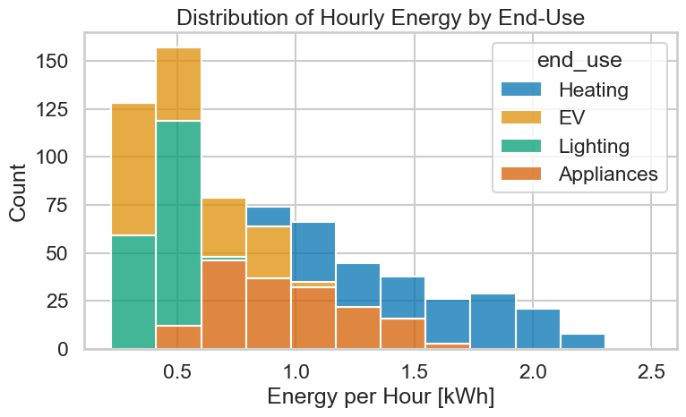
Use categorical palettes when
hueis unordered categories (Heating, EV, …).
2) Sequential palette (low → high intensity)#
Great for continuous data mapped to color (heatmaps, 2D hist, KDE shading).
sns.set_style("whitegrid")
sns.set_context("talk")
# Perceptually-uniform colormap
cmap = sns.color_palette("viridis", as_cmap=True)
# ---- 1D KDE: use a single color sampled from the colormap ----
kde_color = cmap(0.6) # pick any t in [0,1]
plt.figure(figsize=(8,5))
sns.kdeplot(
data=df, x="demand",
fill=True, color=kde_color,
bw_adjust=0.7, thresh=0.05, linewidth=1
)
plt.title("Demand Density (Sequential Palette)")
plt.xlabel("Demand [MW]")
plt.tight_layout()
plt.show()
# ---- Heatmap: the colormap *is* used here ----
plt.figure(figsize=(7,5))
sns.heatmap(
pivot_2d.sort_index(), # ensure hour ascending
cmap=cmap, cbar_kws={"label": "Demand [MW]"}
)
plt.title("Demand Heatmap (Sequential)")
plt.tight_layout()
plt.show()
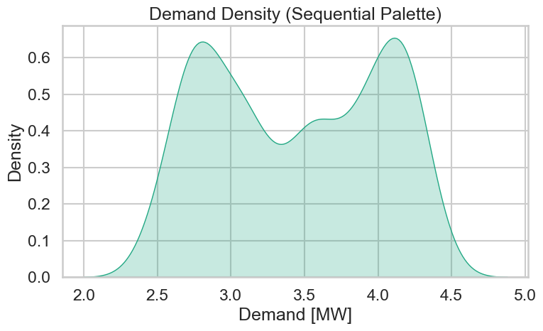
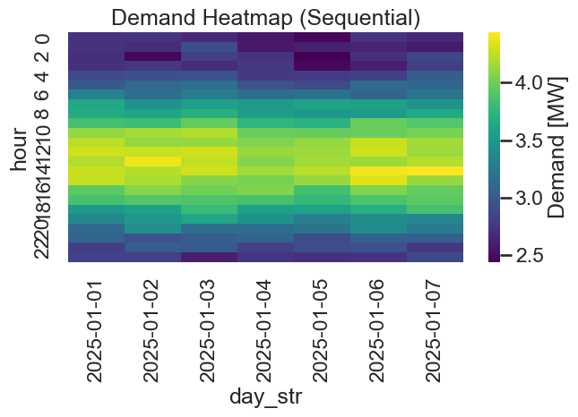
3) Diverging palette (deviation around a midpoint)#
Use when coloring positive vs negative deviations (e.g., error vs baseline).
sns.set_style("whitegrid")
sns.set_context("talk")
# If df has no 'err' column yet, recreate it (same logic as before)
if "err" not in df.columns:
hour = df["hour"].to_numpy()
bias = -0.10 * np.exp(-((hour - 19)/4.0)**2)
pred = df["demand"].to_numpy() + bias + np.random.default_rng(7).normal(0, 0.08, len(df))
df = df.assign(err=pred - df["demand"].to_numpy())
# Diverging colormap
div_cmap = sns.diverging_palette(240, 10, as_cmap=True) # blue↔red
# ---- 1D KDE: use a single color sampled from the colormap ----
kde_color = div_cmap(0.15) # bluish side; try 0.85 for red side
plt.figure(figsize=(8,5))
sns.kdeplot(data=df, x="err", fill=True, color=kde_color, bw_adjust=0.8, thresh=0.03, linewidth=1)
plt.axvline(0, color="k", lw=1)
plt.title("Forecast Error Distribution (Diverging)")
plt.xlabel("Error [MW]")
plt.tight_layout()
plt.show()
# ---- Diverging heatmap (centered at 0) ----
plt.figure(figsize=(7,5))
sns.heatmap(err_grid, cmap=div_cmap, center=0, cbar_kws={"label": "Error [MW]"})
plt.title("Error Heatmap (Centered at 0)")
plt.tight_layout()
plt.show();
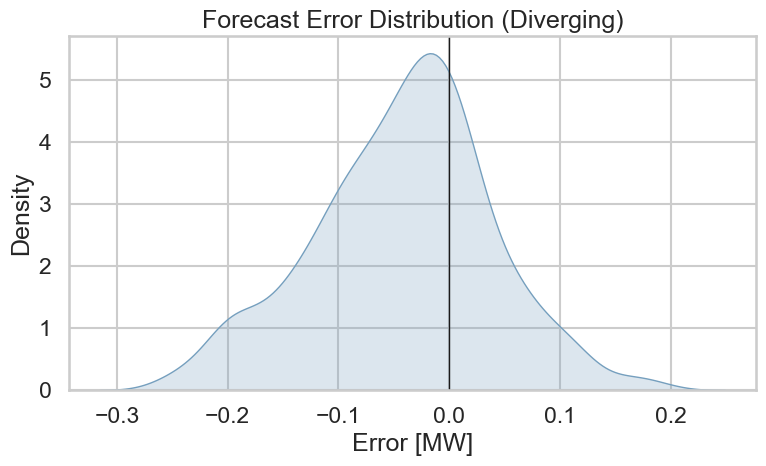
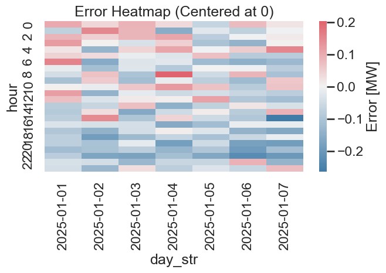
4) Single-series plot with a specific color#
Your original histogram—explicit color string:
sns.set_style("whitegrid"); sns.set_context("talk")
plt.figure(figsize=(8,5))
sns.histplot(df["demand"], bins=12, color="steelblue")
plt.title("Distribution of Hourly Demand")
plt.xlabel("Demand [MW]")
plt.tight_layout(); plt.show()
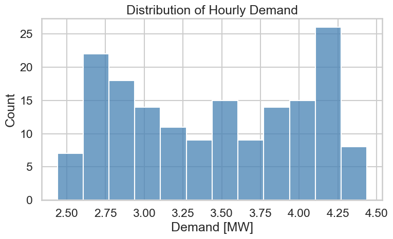
5) Stable color mapping (dict) for consistent branding#
Guarantee the same color per category across all plots.
sns.set_style("whitegrid")
sns.set_context("talk")
# Build a stable color map from df_agg
cats = sorted(df_agg["end_use"].dropna().unique())
palette = sns.color_palette("Set2", n_colors=len(cats))
COLOR_MAP = dict(zip(cats, palette)) # {"Heating": (r,g,b), ...}
plt.figure(figsize=(9,5))
sns.barplot(
data=df_agg,
x="day", y="kwh",
hue="end_use",
palette=COLOR_MAP,
estimator="sum", errorbar=None
)
plt.title("Daily kWh by End-Use")
plt.xlabel("Day")
plt.ylabel("kWh")
plt.xticks(rotation=45, ha="right")
plt.legend(title="End-use", bbox_to_anchor=(1.02, 1), loc="upper left")
plt.tight_layout()
plt.show()
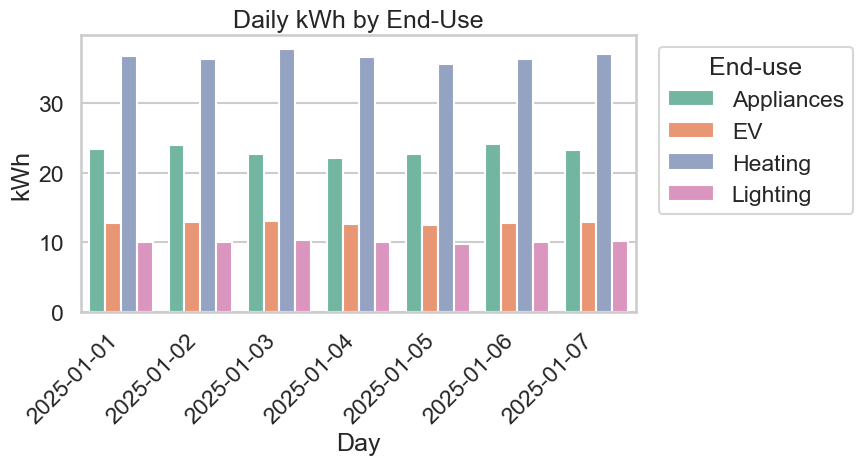
6) Quick palette preview helper (optional)#
def show_palette(name, n=8):
p = sns.color_palette(name, n) if isinstance(name, str) else name
sns.palplot(p); plt.title(f"{name} ({n})"); plt.show()
show_palette("colorblind", 8)
show_palette("Set2", 6)
show_palette("tab10", 10)
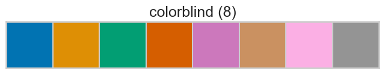
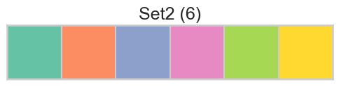
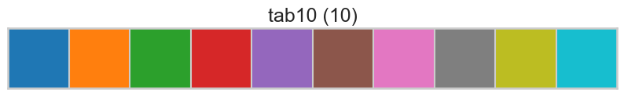
Cheatsheet#
Categorical:
"colorblind","Set2","tab10","Paired".Sequential:
"viridis","cividis","mako","flare","Blues","Greens".Diverging:
sns.diverging_palette(240, 10, as_cmap=True),"icefire","coolwarm","RdBu_r".
Save as PDF#
# sharp plots with higher resolution
%config InlineBackend.figure_format = 'svg'
plt.rcParams['figure.dpi'] = 150
plt.rcParams['savefig.dpi'] = 150
fig.savefig("acf_df.pdf", format="pdf", bbox_inches="tight")
Summary#
Matplotlib → full control; more verbose.
Seaborn → nicer defaults; quick statistical plots.
Customize colors, sizes, titles, and styles to improve clarity.
Use advanced plots (box/violin/heatmap/pairplot) to reveal patterns in energy data.